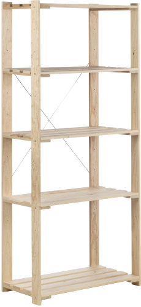
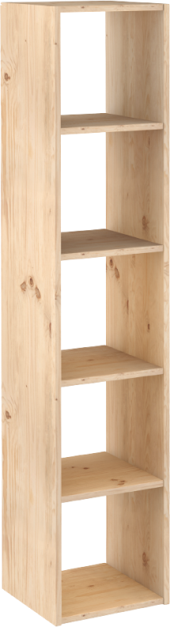
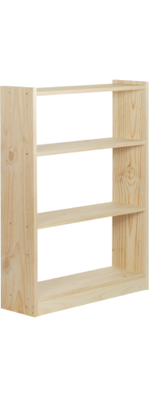

Nova NVET50.99
Referencia NVET50.99 de la familia de estanterías Nova.
Ver ficha oficial ↗CATÁLOGO PARA DISTRIBUCIÓN
Explora tres familias de estanterías y prepara una propuesta de surtido con cantidades claras para revisar con el equipo.

Tres referencias reales. Las opciones, precios y existencias se confirman en la tienda oficial.
Referencia NVET50.99 de la familia de estanterías Nova.
Ver ficha oficial ↗
Referencia DMC500.99 de la familia modular Dinamic Cubos.
Ver ficha oficial ↗
Referencia GAL480.99 de la familia Gala de estanterías de pino macizo.
Ver ficha oficial ↗TU LISTA LOCAL
Tu selección queda en este navegador. No reserva productos ni envía pedidos.
Astigarraga diseña, fabrica y distribuye muebles de pino macizo.
La web distingue rutas para distribuidores, particulares y empresas.
Se muestran NVET50.99, DMC500.99 y GAL480.99, referencias de las familias Nova, Dinamic Cubos y Gala.